Soru 1Cevap: B
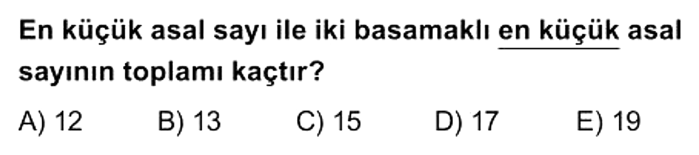
Çözüm
- En küçük asal sayı $2$'dir.
- İki basamaklı en küçük asal sayı $11$'dir ($10$ asal değildir).
- Toplam $2+11=13$ → B.
Cevap: B
Soru 2Cevap: A
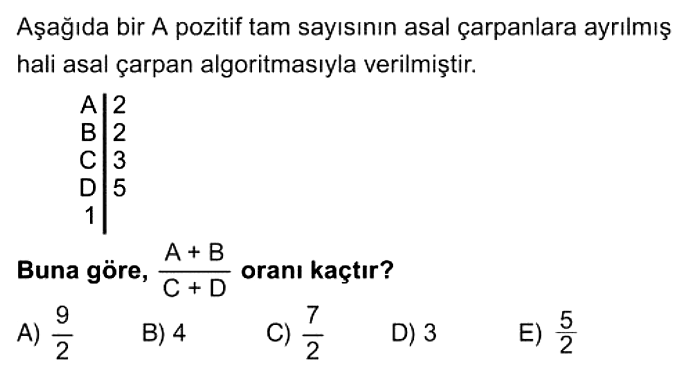
Çözüm
- Algoritmada aşağıdan yukarı: $D=5$, $C=3\cdot5=15$, $B=2\cdot15=30$, $A=2\cdot30=60$.
- $A+B=90$, $C+D=20$.
- $\frac{90}{20}=\frac92$ → A.
Cevap: A
Soru 3Cevap: E
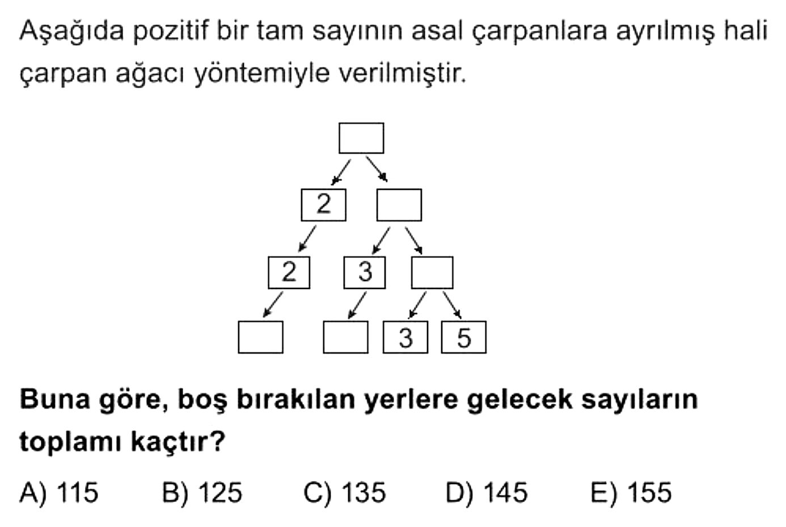
Çözüm
- Asal sayılar dalda aynen aşağı iner: soldaki boşluk $2$, ortadaki boşluk $3$.
- Sağdaki kutu $3\cdot5=15$; onun üstü $3\cdot15=45$; en üstteki sayı $2\cdot45=90$.
- Boşlukların toplamı $90+45+15+2+3=155$ → E.
Cevap: E
Soru 4Cevap: C
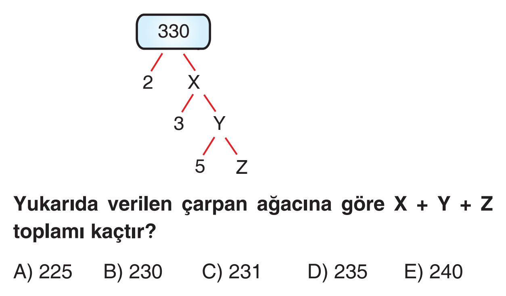
Çözüm
- $330=2\cdot X \Rightarrow X=165$.
- $165=3\cdot Y \Rightarrow Y=55$; $55=5\cdot Z \Rightarrow Z=11$.
- $X+Y+Z=165+55+11=231$ → C.
Cevap: C
Soru 5Cevap: D
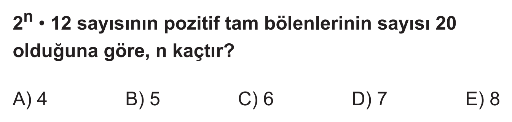
Çözüm
- $2^n\cdot12=2^{n+2}\cdot3$.
- Pozitif bölen sayısı $(n+3)(1+1)=20$.
- $n+3=10 \Rightarrow n=7$ → D.
Cevap: D
Soru 6Cevap: A
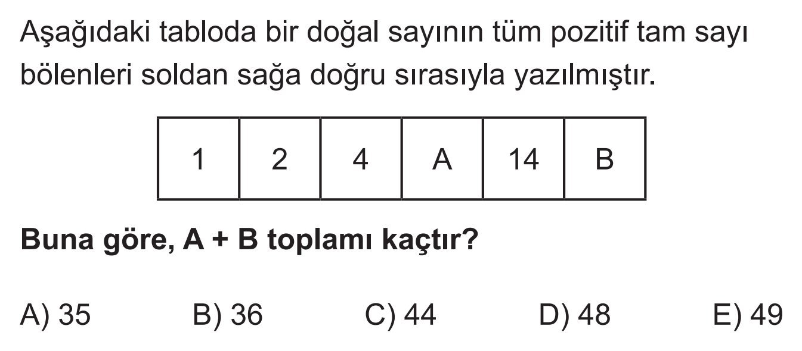
Çözüm
- Altı bölen sıralı: $1,2,4,A,14,B$; $B$ sayının kendisidir.
- Bölenler eşleşir: $2\cdot14=28=B$ ve $4\cdot A=28 \Rightarrow A=7$.
- $A+B=35$ → A.
Cevap: A
Soru 7Cevap: B
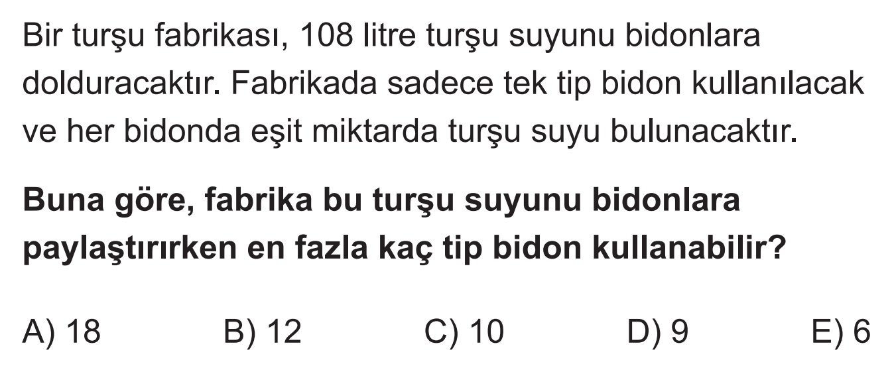
Çözüm
- Her bidon tipi $108$'in bir pozitif bölenine karşılık gelir.
- $108=2^2\cdot3^3$.
- Pozitif bölen sayısı $3\cdot4=12$ → B.
Cevap: B
Soru 8Cevap: D
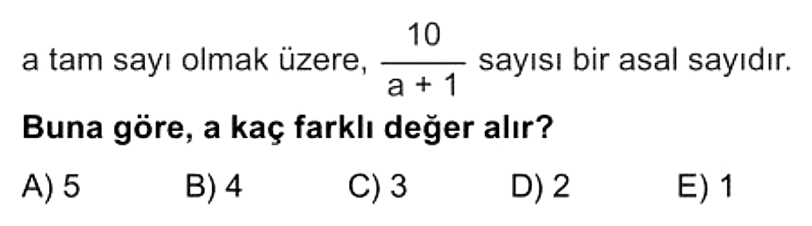
Çözüm
- $\frac{10}{a+1}$ asal olmalı; $a+1$, $10$'un pozitif böleni olmalı (negatif bölen sonucu negatif yapar).
- $a+1=2 \Rightarrow 5$ asal; $a+1=5 \Rightarrow 2$ asal; $a+1=1$ ya da $10$ için sonuç $10$ ve $1$ asal değil.
- $a\in\{1,4\}$: 2 farklı değer → D.
Cevap: D
Soru 9Cevap: B
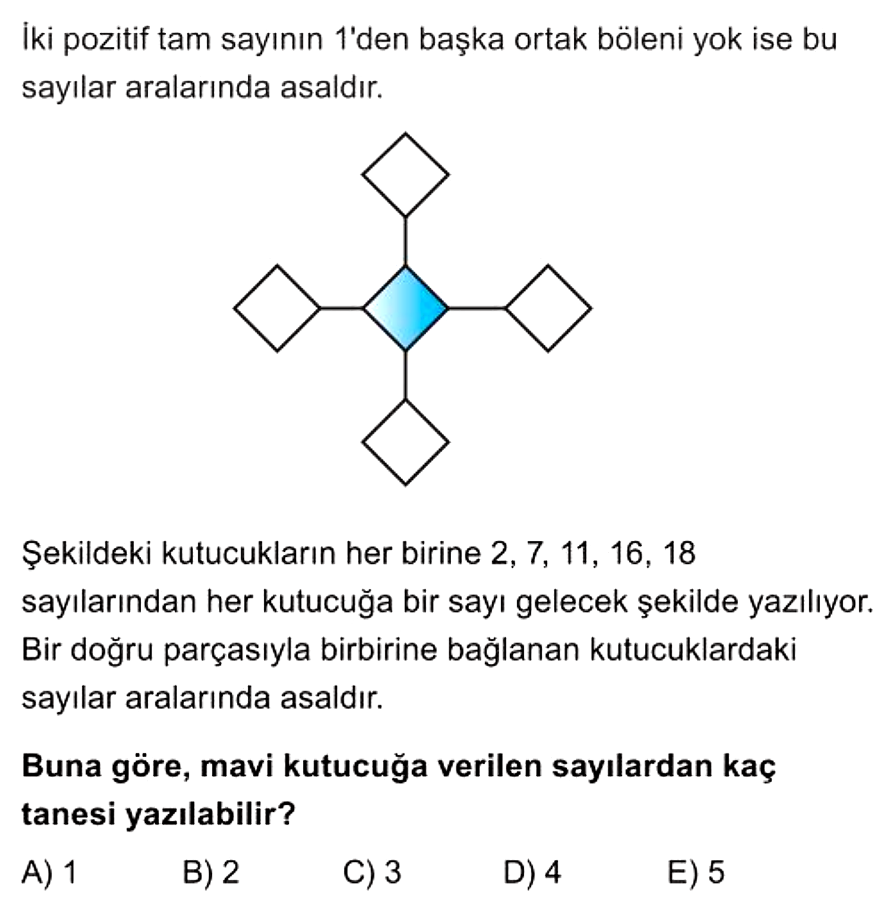
Çözüm
- Mavi kutucuk diğer dört kutucuğun hepsine bağlı; dolayısıyla diğer dört sayının her biriyle aralarında asal olmalı.
- $2$, $16$ ve $18$ ile ortak böleni $2$ olan sayılar ($2,16,18$) ortada olamaz.
- $7$ ve $11$ diğer tüm sayılarla aralarında asaldır → 2 sayı → B.
Cevap: B
Soru 10Cevap: B
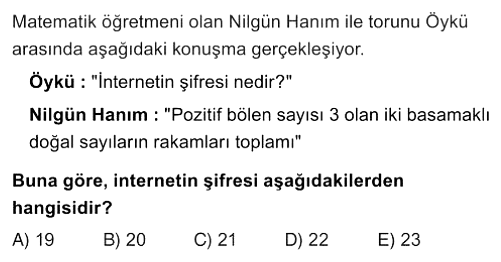
Çözüm
- Pozitif bölen sayısı 3 olan sayılar bir asalın karesidir: $p^2$ (bölenleri $1,p,p^2$).
- İki basamaklı olanlar $5^2=25$ ve $7^2=49$.
- Rakamlar toplamı $2+5+4+9=20$ → B.
Cevap: B
Soru 11Cevap: C
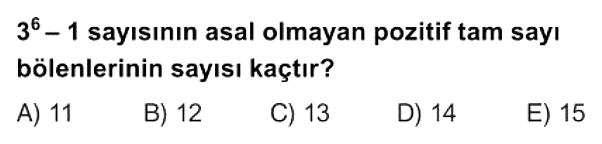
Çözüm
- $3^6-1=728=2^3\cdot7\cdot13$.
- Pozitif bölen sayısı $(3+1)(1+1)(1+1)=16$.
- Asal bölenler $2,7,13$ çıkarılır: $16-3=13$ → C.
Cevap: C
Soru 12Cevap: D
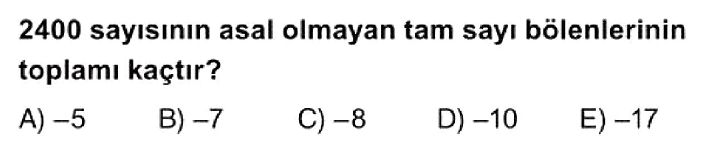
Çözüm
- Bir sayının tüm tam sayı bölenlerinin toplamı $0$'dır.
- $2400=2^5\cdot3\cdot5^2$; asal bölenler $2,3,5$, toplamları $10$.
- Asal olmayan tam bölenlerin toplamı $0-10=-10$ → D.
Cevap: D
Soru 13Cevap: A
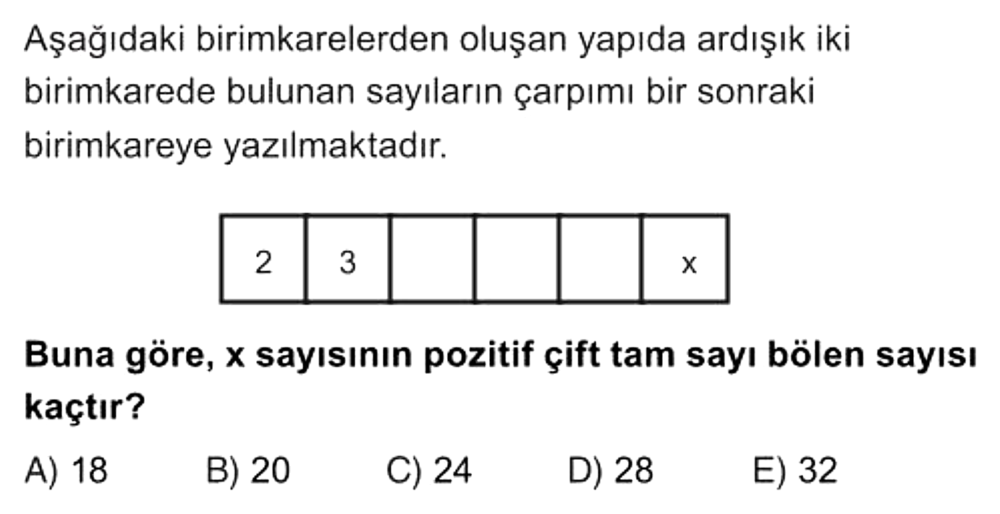
Çözüm
- Kareler: $2,\,3,\,6,\,18,\,108,\,x$ (her sayı önceki ikisinin çarpımı).
- $x=18\cdot108=1944=2^3\cdot3^5$.
- Çift bölenlerde $2$'nin kuvveti en az 1: $3\cdot6=18$ → A.
Cevap: A
Soru 14Cevap: E
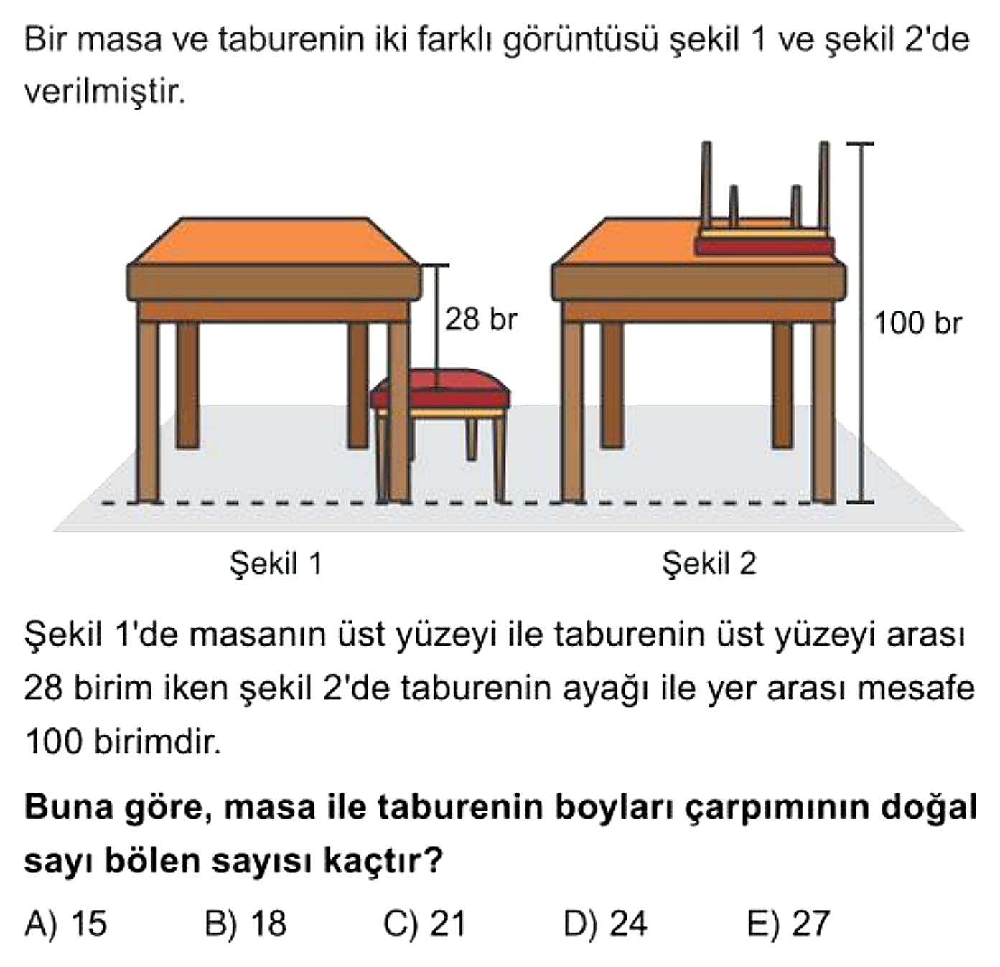
Çözüm
- Masa boyu $m$, tabure boyu $t$: Şekil 1'de $m-t=28$.
- Şekil 2'de tabure ters çevrilip masaya konmuş: $m+t=100$ → $m=64$, $t=36$.
- $64\cdot36=2^8\cdot3^2$ → bölen sayısı $9\cdot3=27$ → E.
Cevap: E
Soru 15Cevap: C
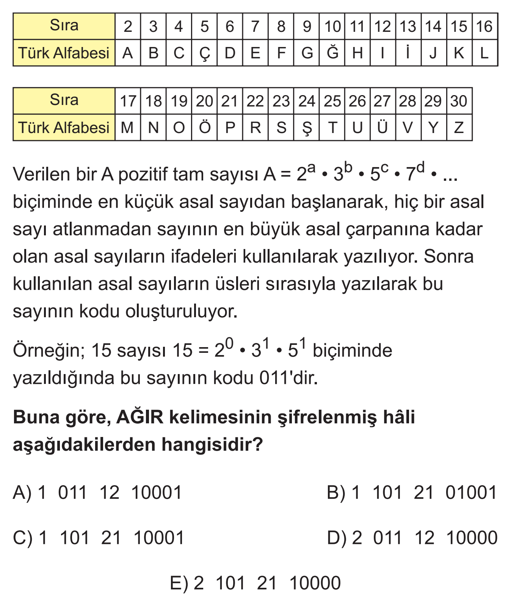
Çözüm
- Sıra numaraları: A $=2$, Ğ $=10$, I $=12$, R $=22$.
- $2=2^1$ → 1; $10=2^1\cdot3^0\cdot5^1$ → 101; $12=2^2\cdot3^1$ → 21; $22=2^1\cdot3^0\cdot5^0\cdot7^0\cdot11^1$ → 10001.
- AĞIR: 1 101 21 10001 → C.
Cevap: C
Soru 16Cevap: E
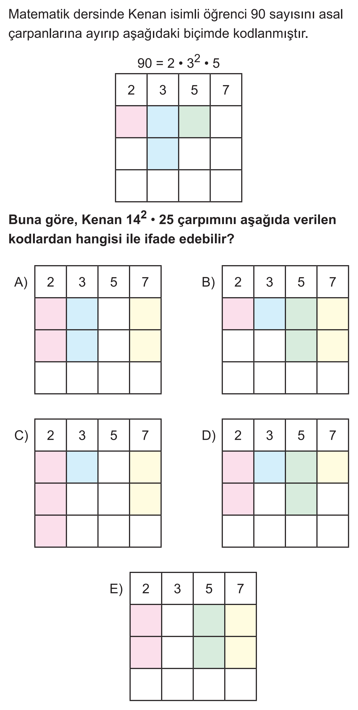
Çözüm
- Tabloda her sütun bir asalı, boyalı kare sayısı o asalın kuvvetini gösterir ($90$: 2 sütununda 1, 3 sütununda 2, 5 sütununda 1 kare).
- $14^2\cdot25=2^2\cdot5^2\cdot7^2$: 2, 5 ve 7 sütunlarında ikişer kare, 3 sütunu boş.
- Bu kodlama E seçeneğidir.
Cevap: E
Soru 17Cevap: B
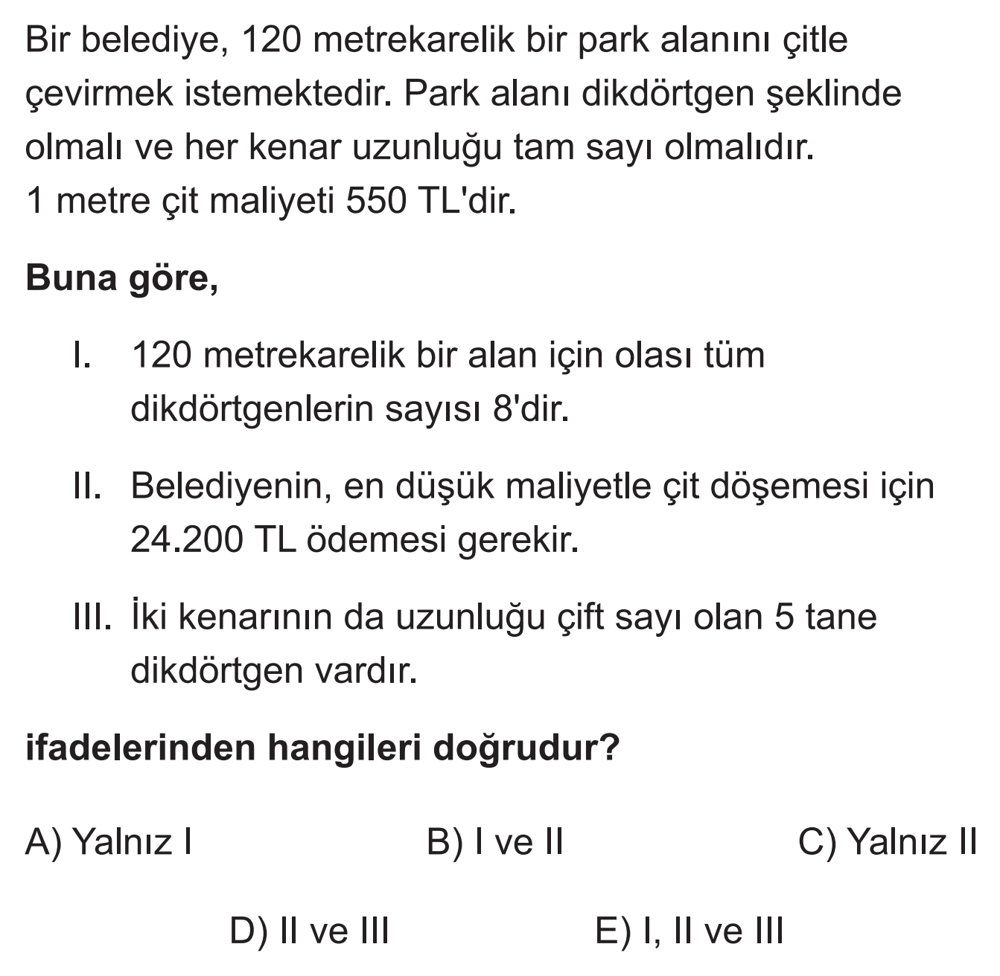
Çözüm
- Kenarlar tam sayı: $120=1\cdot120=2\cdot60=3\cdot40=4\cdot30=5\cdot24=6\cdot20=8\cdot15=10\cdot12$ → 8 dikdörtgen (I doğru).
- En kısa çevre $10\times12$: $2(10+12)=44$ m, maliyet $44\cdot550=24\,200$ TL (II doğru).
- İki kenarı çift olanlar $2\cdot60,\ 4\cdot30,\ 6\cdot20,\ 10\cdot12$: 4 tane (III yanlış) → B.
Cevap: B
Soru 18Cevap: B
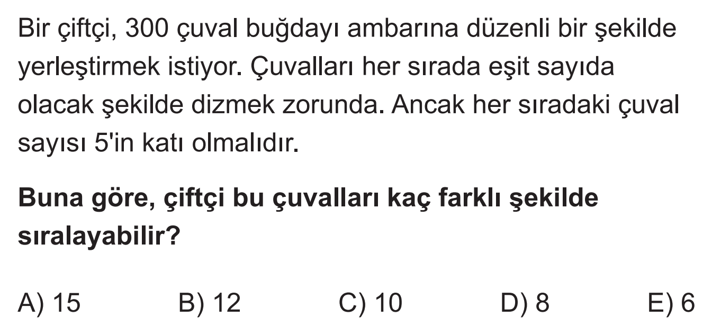
Çözüm
- Her sıradaki çuval sayısı $300$'ün bir böleni ve $5$'in katı olmalı.
- $300=2^2\cdot3\cdot5^2$; $5$'in katı olan bölenlerde $5$'in kuvveti 1 ya da 2.
- Sayı: $3\cdot2\cdot2=12$ → B.
Cevap: B
Soru 19Cevap: D
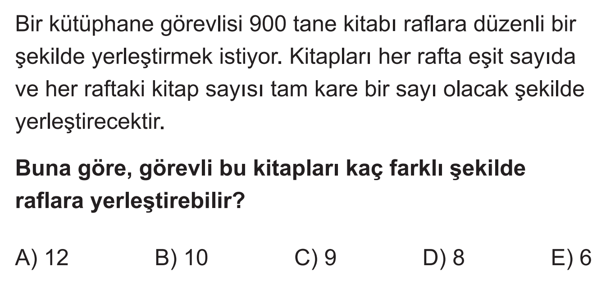
Çözüm
- Raf sayısı ve raftaki kitap sayısı $900$'ün bölenleridir; raftaki kitap sayısı tam kare olmalı.
- $900=2^2\cdot3^2\cdot5^2$; tam kare bölende her üs çift: $0$ ya da $2$.
- $2\cdot2\cdot2=8$ farklı yerleştirme → D.
Cevap: D
Soru 20Cevap: B
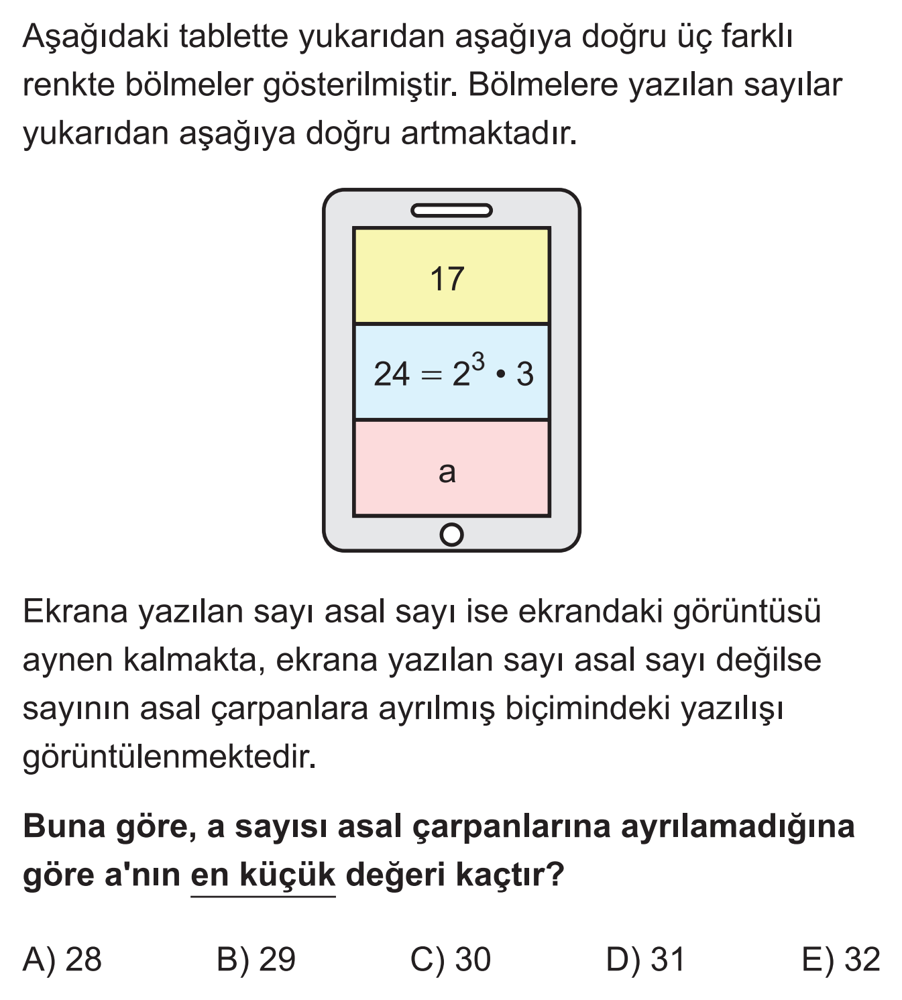
Çözüm
- Ekrana asal sayı aynen, asal olmayan sayı asal çarpanlarıyla yazılır.
- $a$ aynen görüntülendiğine göre asaldır ve sayılar yukarıdan aşağı artar: $a>24$.
- $24$'ten büyük en küçük asal $29$ → B.
Cevap: B
Soru 21Cevap: D
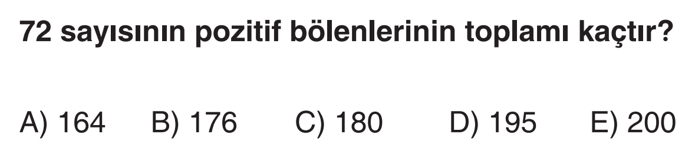
Çözüm
- $72=2^3\cdot3^2$.
- Bölenler toplamı $(1+2+4+8)(1+3+9)=15\cdot13$.
- $=195$ → D.
Cevap: D
Soru 22Cevap: C
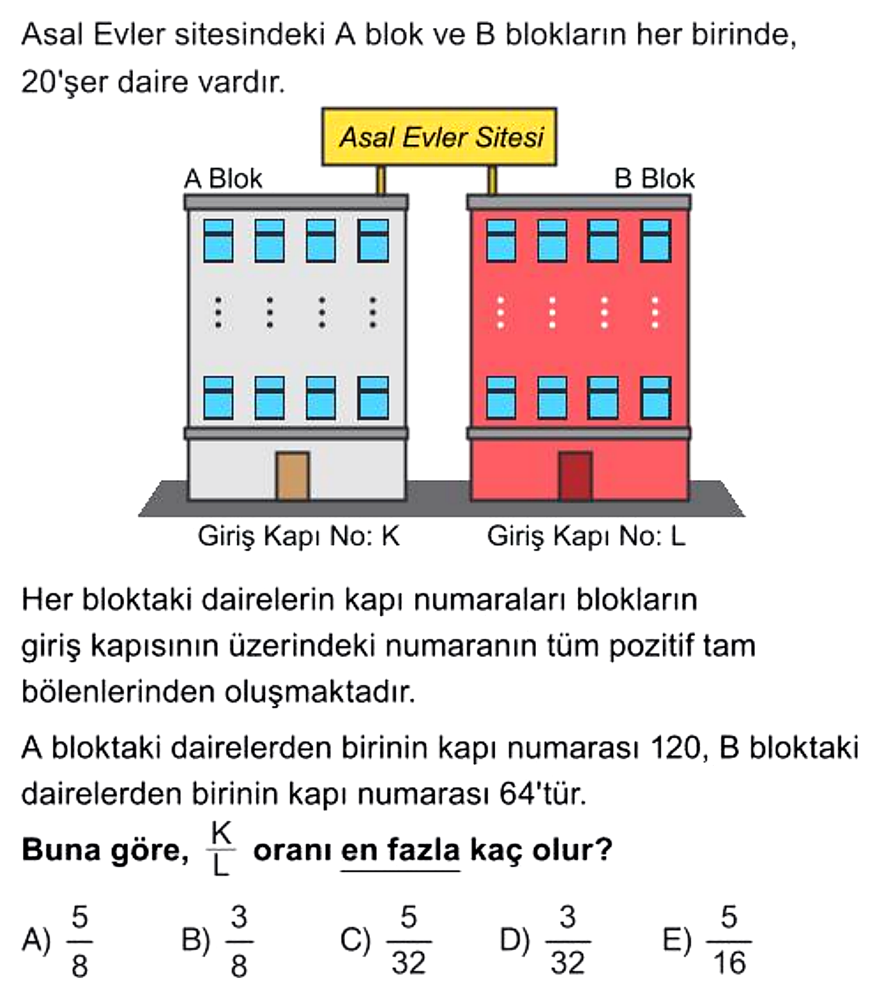
Çözüm
- A blokta 20 daire var: $K$'nin pozitif bölen sayısı 20 ve $120=2^3\cdot3\cdot5$ bir bölen → $K=2^4\cdot3\cdot5=240$ ($5\cdot2\cdot2=20$).
- B blokta $L$'nin 20 böleni var ve $64=2^6$ bölen → en küçük $L=2^9\cdot3=1536$ ($10\cdot2=20$).
- $\frac KL$ en fazla $\frac{240}{1536}=\frac5{32}$ → C.
Cevap: C
Soru 23Cevap: B
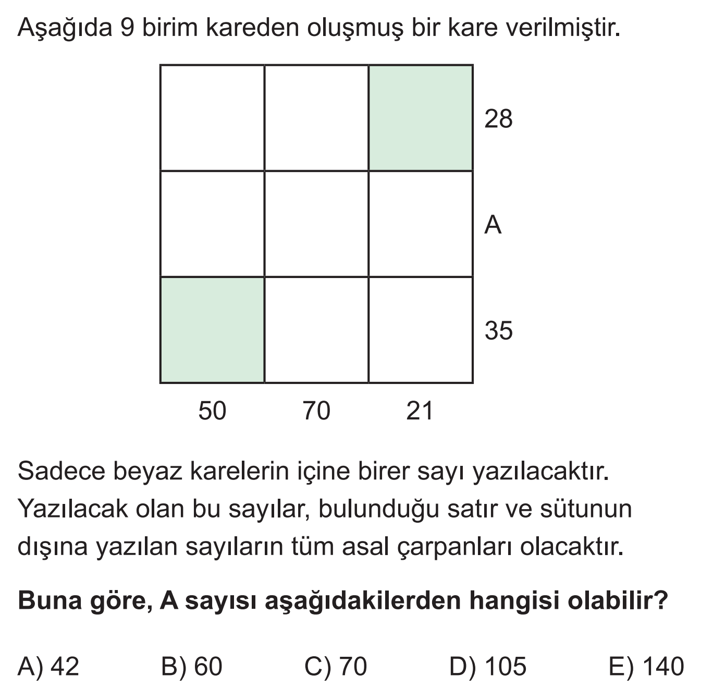
Çözüm
- Her beyaz kareye bir asal yazılır; satır ve sütundaki sayılar o satır/sütun etiketinin farklı asal çarpanlarıdır.
- 3. satır ($35$) ve 3. sütun ($21$) kesişimi $7$, yanındaki $5$; 1. satır ($28$): $2$ ve $7$; 2. sütun ($70$) için orta kare $2$, 1. sütun ($50$) için $5$, 3. sütun ($21$) için $3$.
- 2. satırda $5,2,3$ var → $A$'nın asal çarpanları $2,3,5$: seçeneklerde $60$ → B.
Cevap: B
Soru 24Cevap: A
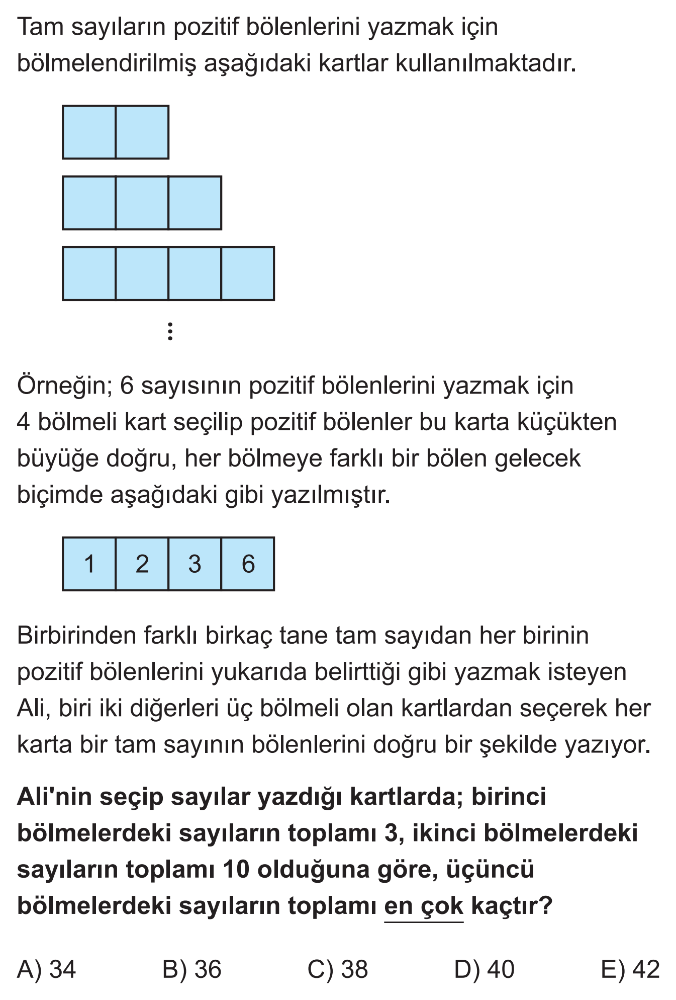
Çözüm
- 2 bölmeli kart bir asalın ($1,p$), 3 bölmeli kart bir asalın karesinin ($1,q,q^2$) bölenlerini taşır.
- Birinci bölmeler toplamı $3$ → üç kart; ikinci bölmeler $p+q+r=10$ → asallar $2,3,5$.
- Üçüncü bölmeler $q^2+r^2$ en çok $3^2+5^2=34$ → A.
Cevap: A